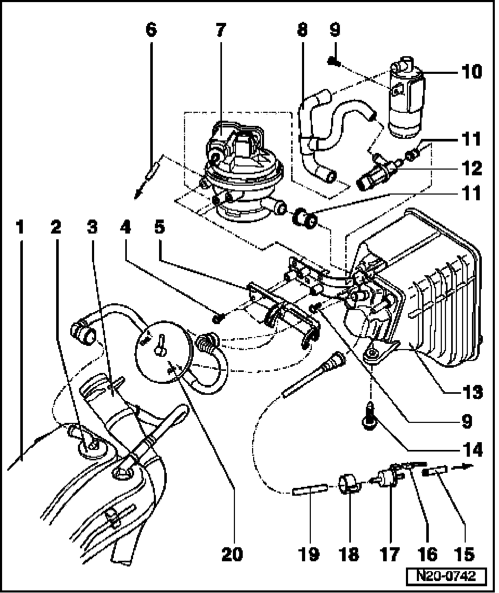
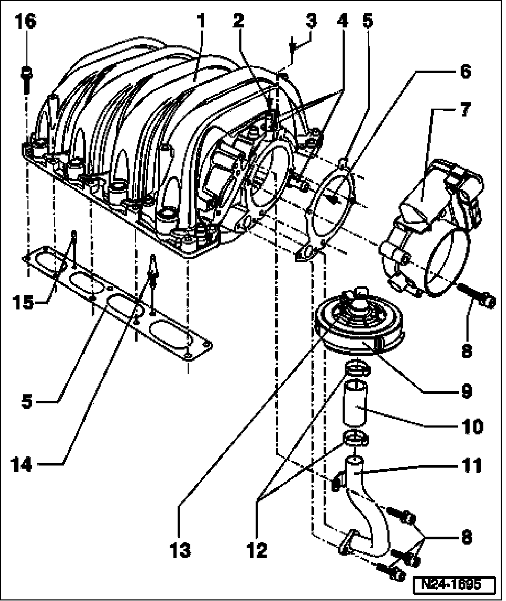
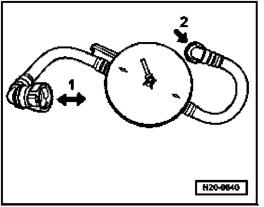

Evaporative Emissions System: Locations
EVAP Canister System Components, Removing And Installing

1 Expansion tank
- Right side
2 Gravity valve
3 Fuel filler tube
4 5 Nm
5 Bracket
6 Vent line
- Check for secure fitting

- To vacuum connection at intake manifold change-over, -item 3-
7 Leak detection pump (LDP) -V144-
- 3-pin connector, black. Refer to Leak Detection Pump (LDP), checking.
8 Connection hose
- Check for secure seating
- Between air filter, Leak detection pump (LDP) -V144-, and Evaporative Emission (EVAP) Canister Purge Solenoid Valve -N115-
9 5 Nm
10 Air filter for diagnostic pump
- Clean if soiled
11 Rubber bushing
- Note installed position
- Replace if damaged
12 Evaporative Emission (EVAP) Canister Purge Solenoid Valve -N115-*
- Installation position: Arrow points in direction of flow
- 2-pin connector, black. Checking. Refer to Leak Detection Pump (LDP), checking.
13 EVAP canister
- Component location: in wheelhousing, right rear
14 9 Nm
15 Vent line
- Check for secure seating
- To vacuum connection at intake manifold change-over, -item 2-
16 Connector
- Black, 2-pin
17 Evaporative Emission (EVAP) Canister Purge Regulator Valve -N80-*
- Installation position: Arrow points in direction of flow. Refer to Leak Detection Pump (LDP), checking.
18 Retaining ring
- Note installed position
- Replace if damaged
19 Ventilation line
- Check for secure seating
20 Pressure retention valve
- Checking, See Fig. 1
Fig. 1 Check pressure retaining valve at EVAP canister

The pressure retaining valve is opened in both flow directions on the gravity valve side at the expansion tank (arrow -1- is the expansion tank side).
Refer to item 2.
On the other side, it is open in one flow direction only (-arrow 2- is the EVAP canister side).